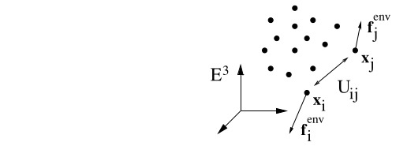

From the definitions above we state the fundamental balance principles as
Ask AI:
Students should be able to:
[ ] state the balance laws for a system of particlesConsider a continuum body \(\mathcal{B}\) in configuration \(\Omega_t\), with its material element at \(\boldsymbol{x}\) having a density \(\rho\), an average velocity \(\boldsymbol{v}\). We define:
\[ \frac{d}{dt} \mathrm{mass}[\Omega_t] = \]
Ask AI:
Students should be able to:
[ ] state the balance laws for a continuum (integral form)[ ] identify mechanical variables in the first law of thermodynamics